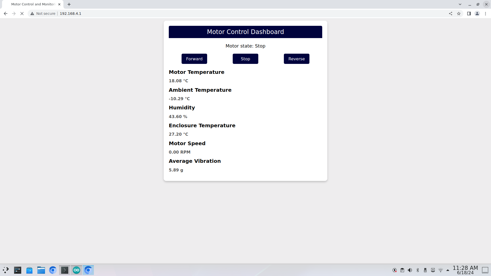

Upload and Running
It is essiential that you have completed the following sections:
-
Once you have compiled and uploaded the code you can connect to the board with a laptop/phone/tablet that has WiFi capabilities.
-
Connect to the ssid of your WiFi, which defined in the IoT Setup. This section uses has the ssid "D1_Mini". In this example I am using the Single Board Computer, the Rock C4.
-
You should launch a browser and navigate to the following IP address,
192.168.4.1, and see the following webpage:
-
The webpage should update every few seconds, and you could try tilting the board to see if the accelrometer data changes:
-
If you provide power to for the motor like this, you should be able to get the motor to spin in a clockwise, counterclockwise directions or stop, by pressing the respecive buttons, remember that the servier.handleClient deals with the request from the webpage and then the code handles the string with "Forward", "Reverse", and "Stop"
... String m_state = server.arg("button"); //Get button state if (m_state == "Forward") { digitalWrite(D5, LOW); //Motor Forward analogWrite(D0, 500); Motor_state = "Forward"; } ...Webpage updating on "Forward, "Stop" and "Reverse"
-
So this is all fine and dandy, but we are not actually logging any of the is data, once webpage updates the values disappear. We are going to update a predictive.ino to provide a new page that displays the all the data that can be caputred by the single board computer or any computer by running a python script.
-
First add the following line in the
setup()function in as indicated below:... server.on("/", handleRoot); //Which routine to handle at root location server.on("/sbc",handleSBC); // This is the new line of code, that will respond when the SBC requests the data server.on("/form", handleForm); //These request sent when we click on button server.begin(); //Start server ... -
Lastly, at the end the file add a new function below the
handleForm():/** * @brief Sends sensor data to a Single Board Computer (SBC). * * This function compiles various sensor readings into a comma-separated string * and sends it to a connected SBC. The data includes motor temperature, ambient * temperature, humidity, temperature, motor speed, motor state, and vibration * readings along the x, y, and z axes. * * @param none Uses global variables to compile data. * @return void */ void handleSBC(){ String dataForSBC = String(m_Temp)+ ","+ String(a_Temp)+ ","+ String(h)+ "," + String(t)+ ","+ String(motor_speed)+ ","+ String(Motor_state)+ "," + String(x_axis)+ ","+ String(y_axis)+ ","+ String(z_axis)+ ","+ String(rms_vib); server.send(200, "/text/plain", dataForSBC); // Send data to SBC }
-
-
Compile and upload the code to the board again, and once served, append the URL with
/scb,192.168.4.1/sbc, and you should see something like this: -
The ESP8266 is esseintially finished, but now we need to work on the SBC so we can automate the data collection to perform data analysis on, navigate to here: